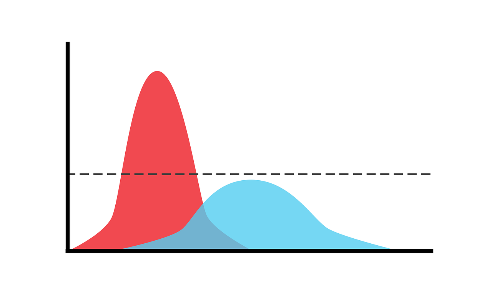
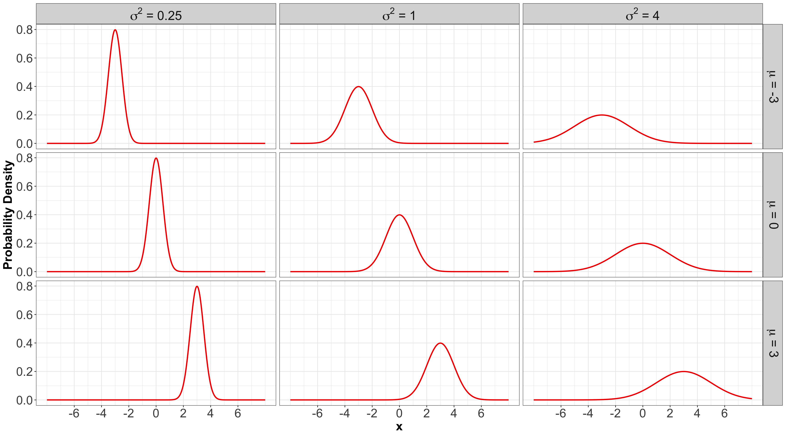
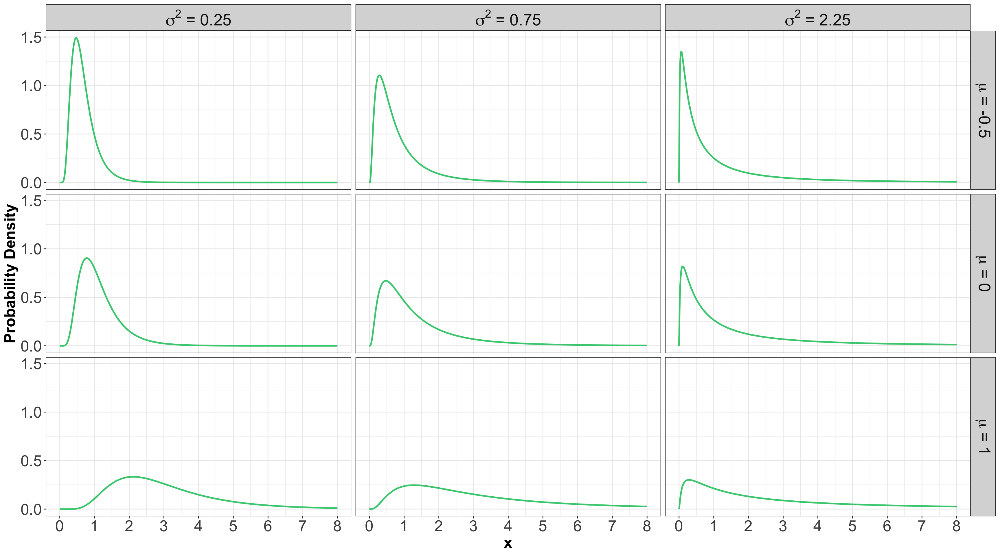
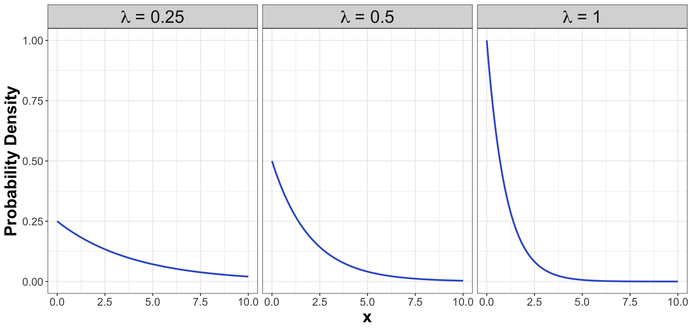
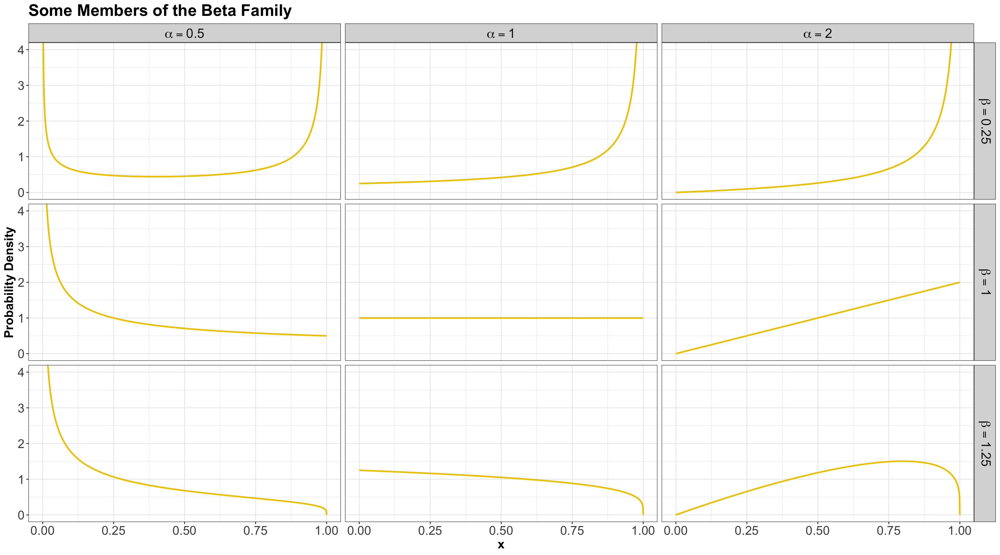
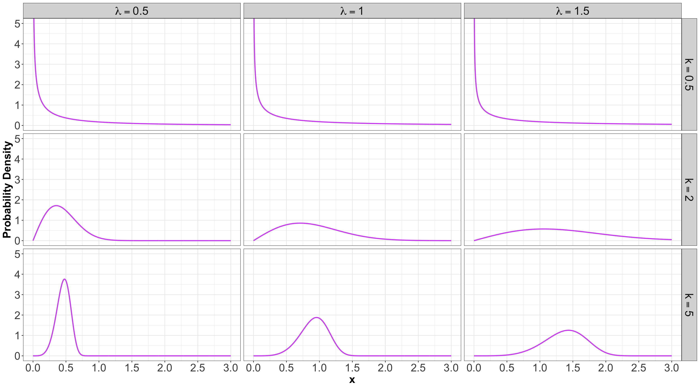
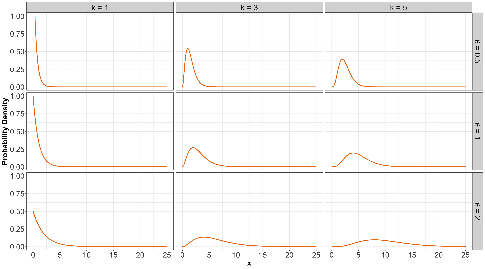

Outline
- Common Continuous Distribution Families
- Continuous Multivariate Distributions
- Conditional Distributions (Revisited)
1. Common Continuous Distribution Families

PDF, Mean, and Variance
- It is denoted as \[X \sim \operatorname{Uniform}(a, b).\]
- The PDF is given by \[f_X(x\mid a, b) = \frac{1}{b - a} \qquad \text{for} \quad a \leq x \leq b.\]
- The mean is \(\mathbb{E}(X) = \frac{a + b}{2}\).
- The variance is \(\text{Var}(X) = \frac{(b - a)^2}{12}\).
1.2. Gaussian or Normal

- Probably the most famous family of distributions.
- It has a density that follows a “bell-shaped” curve.
- It is parameterized by its mean \[-\infty < \mu < \infty\] and variance \[\sigma^2 > 0.\]
PDF, Mean, and Variance
- It is denoted as \[X \sim \mathcal N\left(\mu, \sigma^2\right).\]
- The PDF is \[f_X(x \mid \mu, \sigma^2) = \frac{1}{\sqrt{2\pi \sigma^2}} \exp \left[-\frac{(x - \mu)^2}{2\sigma^2} \right] \quad \text{for } -\infty < x < \infty.\]
- The mean is \(\mathbb{E}(X) = \mu\).
- The variance is \(\text{Var}(X) = \sigma^2\).
Some members of the Gaussian or Normal family…

1.3. Log-Normal

- A random variable \(X\) is a Log-Normal distribution if the transformation \(\log(X)\) is Normal.
- This family is often parameterized by the mean \[-\infty < \mu < \infty\] and variance \[\sigma^2 > 0\] of \(\log X\).
PDF, Mean, and Variance

- It is denoted as \[X \sim \operatorname{Log-Normal}\left(\mu, \sigma^2\right).\]
- The PDF is \[f_X(x \mid \mu, \sigma^2) = \frac{1}{x\sqrt{2\pi \sigma^2}} \exp \left\{ -\frac{[\log(x) - \mu]^2}{2\sigma^2} \right\} \quad \text{for } x \geq 0.\]
- The mean is \(\mathbb{E}(X) = \exp{\left[ \mu + \left( \sigma^2 / 2 \right) \right]}\).
- The variance is \(\text{Var}(X) = \exp{\left[ 2 \left( \mu + \sigma^2 \right) \right]} - \exp{\left( 2\mu + \sigma^2 \right)}\).
Some members of the Log-Normal family…

1.4. Exponential
- The Exponential family is for positive random variables.
- It is often interpreted as wait time for some event to happen.
- The family is characterized by a single parameter, usually either the mean wait time \(\beta > 0\), or its reciprocal, the average rate \(\lambda > 0\) at which events happen.
Definition
- The Exponential family is denoted as \[X \sim \operatorname{Exponential}(\beta),\] or \[X \sim \operatorname{Exponential}(\lambda).\]
PDFs
- The PDF can be parameterized as \[f_X(x \mid \beta) = \frac{1}{\beta} \exp(-x / \beta) \qquad \text{for} \quad x \geq 0\] or \[f_X(x \mid \lambda) = \lambda \exp(-\lambda x) \qquad \text{for} \quad x \geq 0.\]
Mean
- Using a \(\beta\) parameterization, the mean is: \[\mathbb{E}(X) = \beta.\]
- On the other hand, using a \(\lambda\) parameterization, the mean is: \[\mathbb{E}(X) = 1 / \lambda.\]
Variance
- Using a \(\beta\) parameterization, the variance is: \[\text{Var}(X) = \beta^2.\]
- On the other hand, using a \(\lambda\) parameterization, the variance is: \[\text{Var}(X) = 1 / \lambda^2.\]
Some members of the Exponential family…

1.5. Beta
- The Beta family of distributions is defined for random variables taking values between \(0\) and \(1\).
- Hence, it is useful for modelling the distribution of proportions.
- It is characterized by two positive shape parameters, \(\alpha > 0\) and \(\beta > 0\).
PDF
- It is denoted as \[X \sim \operatorname{Beta}(\alpha, \beta).\]
- The PDF is given by \[f_X(x \mid \alpha, \beta) = \frac{\Gamma(\alpha + \beta)}{\Gamma(\alpha) \Gamma(\beta)} x^{\alpha - 1} (1 - x)^{\beta - 1} \quad \text{for} \quad 0 \leq x \leq 1,\] where \(\Gamma(\cdot)\) is the Gamma function.
Mean and Variance
- The mean is \[\mathbb{E}(X) = \frac{\alpha}{\alpha + \beta}.\]
- The variance is \[\text{Var}(X) = \frac{\alpha \beta}{(\alpha + \beta)^2 (\alpha + \beta + 1)}.\]
Some members of the Beta family…

1.6. Weibull
- A generalization of the Exponential family, which allows for an event to be more likely the longer you wait.
- Because of this flexibility and interpretation, this family is used heavily in survival analysis when modelling time until an event.
- This family is characterized by two parameters, a scale parameter \(\lambda > 0\) and a shape parameter \(k > 0\).
PDF
- It is denoted as \[X \sim \operatorname{Weibull}(\lambda, k).\]
- The PDF is \[f_X(x \mid \lambda, k) = \frac{k}{\lambda} \left( \frac{x}{\lambda} \right)^{k - 1} \exp^{-(x / \lambda)^k} \qquad \text{for} \quad x \geq 0.\]
Mean and Variance
- The mean is \[\mathbb{E}(X) = \lambda^{1/k} \Gamma \left( 1 + \frac{1}{k} \right).\]
- The variance is \[\text{Var}(X) = \lambda^{2 / k} \left[ \Gamma \left( 1 + \frac{2}{k} \right) - \Gamma^2 \left( 1 + \frac{1}{k} \right) \right].\]
Some members of the Weibull family…

1.7. Gamma
- Another useful two-parameter family with support on non-negative numbers.
- One common parameterization is with a shape parameter \(k > 0\) and a scale parameter \(\theta > 0\).
PDF, Mean, and Variance
- It is denoted as \[X \sim \operatorname{Gamma}(k, \theta).\]
- The PDF is given by \[f_X(x \mid k, \theta) = \frac{1}{\Gamma(k) \theta^k} x^{k - 1} \exp(-x / \theta) \qquad \text{for} \quad x \geq 0,\]
- The mean is \(\mathbb{E}(X) = k \theta\).
- The variance is \(\text{Var}(X) = k \theta^2\).
Some members of the Gamma family…

Summarizing!
](https://mermaid.live/edit#pako:eNp9VMFu2zAM_RVBpwSIO3t10sQYemi79bIVw4ZuweALY9MOMYsKJDlNF-TfJ8dJ2yz2dDAsPpKP5JO0lZnOUSZSEecKVikLYbR2g0emNRgCh6KxCfENONeq_f_RIIsKh-32jmxm0GG7a1aSUKZ5UIAVBQRuOXyFbojBPPe55pRh4J70m4BmbbdzQVaAsHWWobVCG_FhYd5dF0BVbXC3O_Vv1vAGDeu6qmjwCt7qml0feW3R2A7mlhStIG5ZWTg_gMp20xJr5dHBv4k-kbHupQMoHB6amItDG90J71Er9ITZ4Ly0Y2CbaIGFNihws0JDyBlx2QBpen2e9vexkh7WByzB0RpFbz9zgWtkd-D2swFR0AZzPybf2hqqFtCFcKSwkcyuIOvW6qsma70SLXSr2RHXurZ9Upm6QnMm1Y1XN8e8i8GD6J4QWVSk6Fg0CH-qxaIRtkRGA1VX7L5CfyH8cNXgf6n3OcN9zqg3kXeGziwPmgM-TL0r-nQCleYyAGP0UwCVCwyVSzfsofysy-DBF38m4ovHx81KsxeT-l3uQSnoA38iLfxVOzsjj7zo1uS0GdxkS-ASm1aGXYfxbfHtV46kQm-l3L9e28aWSrdEhalM_G-OBdSVS2XKO-8KtdPfnzmTiTM1jmS9yv3TdkdQGlBH4wpYJlu5kclsdhFdxlfjeDx7H03jyXQkn2Uy9tZpFE3G0WQymcXjeDeSf7T28eHFNJxGk6swDi_jaTi-HEnMyWnzpX1d94_snuDX3r_h2_0FYn6FFQ)
1.8 Relevant R Functions
R has functions for many distribution families.- The functions are of the form
<x><dist>, where <dist> is an abbreviation of a distribution family, and <x> is one of d, p, q, or r.
Possible Prefixes for <x>
d: density function – we call this \(f_X(x)\).p: cumulative distribution function (CDF), we call this \(F_X(x)\).q: quantile function (inverse CDF).r: random number generator.
Abbreviations for <dist>
unif: Uniform (continuous).norm: Normal (continuous).lnorm: Log-Normal (continuous).geom: Geometric (discrete).pois: Poisson (discrete).binom: Binomial (discrete).- etc.
Examples for <dist>
- For the Uniform family, we have the following
R functions:
dunif(), punif(), qunif(), and runif().
- For the Gaussian or Normal family, we have the following
R functions:
dnorm(), pnorm(), qnorm(), and rnorm().
iClicker Question
What R function do we need to obtain the density corresponding for \(X \sim \mathcal N(\mu = 2, \sigma^2 = 4)\) at point \(x = 3\)? Select the correct option:
A. pnorm(q = 3, mean = 2, sd = 2)
B. dnorm(x = 3, mean = 2, sd = 4)
C. pnorm(q = 3, mean = 2, sd = 4)
D. dnorm(x = 3, mean = 2, sd = 2)

iClicker Question
What R function do we need for the CDF for \(X \sim \operatorname{Uniform}(a = 0, b = 2)\) at \(x = 0.25, 0.5, 0.75\)?
A. qunif(p = c(0.25, 0.5, 0.75), min = 0, max = 2, lower.tail = TRUE)
B. punif(q = c(0.25, 0.5, 0.75), min = 0, max = 2, lower.tail = TRUE)
C. dunif(x = c(0.25, 0.5, 0.75), min = 0, max = 2)
D. punif(q = c(0.25, 0.5, 0.75), min = 0, max = 2, lower.tail = FALSE)
iClicker Question
What R function do we need to obtain the median of \(X \sim \operatorname{Uniform}(a = 0, b = 2)\)?
A. qunif(p = 0.5, min = 0, max = 2, lower.tail = TRUE)
B. punif(q = 0.5, min = 0, max = 2, lower.tail = TRUE)
C. dunif(x = 0.5, min = 0, max = 2)
D. punif(q = 0.5, min = 0, max = 2, lower.tail = FALSE)
iClicker Question
What R function do we need to generate a random sample of size \(10\) from the distribution \(\mathcal N(\mu = 0, \sigma^2 = 25)\)?
A. runif(n = 10, min = 0, max = 25)
B. rnorm(n = 10, mean = 0, sd = 25)
C. rnorm(n = 10, mean = 0, sd = 5)
D. runif(n = 10, min = 0, max = 5)
2. Continuous Multivariate Distributions

- In the discrete case we already saw joint distributions, conditional distributions, marginal distributions, etc.
- All these concepts are carried over to the continuous world.
- Let us start with two continuous variables (i.e., a bivariate case).
2.1. Continuous Multivariate Distributions

- Recall the joint probability mass function (PMF) between \(\text{Gang}\) demand and length-of-stay in days (\(\text{LOS}\)):
| LOS = 1 |
0.00170 |
0.04253 |
0.12471 |
0.08106 |
| LOS = 2 |
0.02664 |
0.16981 |
0.13598 |
0.01757 |
| LOS = 3 |
0.05109 |
0.11563 |
0.03203 |
0.00125 |
| LOS = 4 |
0.04653 |
0.04744 |
0.00593 |
0.00010 |
| LOS = 5 |
0.07404 |
0.02459 |
0.00135 |
0.00002 |
How can we set up a joint PDF?
- Suppose you have two continuous random variables that have a joint PDF.
- For this continuous case, instead of rows and columns, we have an \(x\) and \(y\)-axis for our two random variables, defining a region of possible values.

The two-runner example!
- Suppose two marathon runners can only finish a marathon between 5.0 and 5.5 hours each, and their end times are totally random!
A bivariate density function in 3D!
- The density function is a surface overtop of this square.
- The orange distribution surface corresponds to the projection of the joint distribution on the \(z\)-axis.
2.2. Calculating Probabilities
- Let \(X\) and \(Y\) be two random variables. Their joint PDF evaluated at the points \(x\) and \(y\) is usually denoted \[f_{X,Y}(x,y).\]
- Therefore, we have a density surface.
- We can calculate probabilities as the volume under the density surface.
What do we mean when we say a “volume”?
- The total volume under the density function must equal 1.
- Formally, this may be written as \[\int_{-\infty}^{\infty} \int_{-\infty}^{\infty} f_{X, Y} (x,y)\,\mathrm{d}x\,\mathrm{d}y = 1.\]

In-Class Question
- In the two-runner example, if the density is equal/flat across the entire sample space, what is the height of this surface?
- That is, what does the density evaluate to?
- What does it evaluate to outside of the sample space?

In-Class Question
- Let \(X\) and \(Y\) be the marathon times of Runner 1 and Runner 2 in hours, respectively.
- What is the probability that Runner 1 will finish the marathon before Runner 2, i.e., \(P(X < Y)\)?
In-Class Question
- What is the probability that Runner 1 finishes in \(5.2\) hours or less, i.e., \(P(X \leq 5.2)\)?
3. Conditional Distributions (Revisited)

- Recall the basic formula for conditional probabilities for events \(A\) and \(B\):
\[P(A \mid B) = \frac{P(A \cap B)}{P(B)}.\]
- Nonetheless, this is only true if \(P(B) \neq 0\), and it is not useful if \(P(A) = 0\) – two situations we are faced with in the continuous world!
3.1. When \(P(A) = 0\)

- Suppose the month is half-way over, and you find that you only have \(\$2500\) worth of expenses so far!
- What is the distribution of this month’s total expenditures now, given this information?
Applying the previous Law of Conditional Probability…

- Let \[X = \text{Monthly Expenses in CAD}.\]
- Assume \[X \sim \operatorname{Log-Normal}(\mu = 8, \sigma^2 = 0.5).\]
- Using the conditional probability formula would give: \[P(X = x \mid X \geq 2500) = \frac{P(X = x)}{P(X \geq 2500)} \qquad \qquad \text{(NO!)}\]
Instead…

- In general, we replace probabilities with densities.
- In this case, what we actually have is: \[f_{X \mid X \geq 2500}(x) = \frac{f_X(x)}{P(X \geq 2500)} \qquad \text{for} \quad x \geq 2500,\] and \[f_{X \mid X \geq 2500}(x) = 0 \qquad \text{for} \quad x < 2500.\]
Comparing Densities

3.2. When \(P(B) = 0\)
- To describe this situation, let us use the marathon runners’ example again:
If Runner 1 ended up finishing in \(5.2\) hours, what is the distribution of Runner 2’s time?
- Let \(X\) be the time for Runner 1, and \(Y\) for Runner 2, what we are asking for is \[f_{Y|X = 5.2}(y).\]
However…
- We already pointed out that \(P(X = 5.2) = 0.\)
- We end up with: \[f_{Y|X = 5.2}(y) = \frac{f_{Y,X}(y, 5.2)}{f_X(5.2)}.\]
- This formula is true in general: \[f_{Y|X}(y) = \frac{f_{Y,X}(y, x)}{f_X(x)}.\]
](https://mermaid.live/edit#pako:eNp1U9tu2zAM_RVBTw7gpr608QVDH9pie9owbNgQDH5RZDolZkmGLlkyI_8-OUrXbo35IEg8FA_JI42UqxZoTQXKVrChkYRopWz0TeKOaWQWyOQj5AuTrRJh_31CNj0swvERDddgIZwmq2vkSkYdM6RjV_Zp8QLdo2T6MBfaIocr-0u9ujDZOK4JGsKIcZyDMURp8m6jr-86hr3TcDz-Gz_Z4h60VK7vMXoBH5STdo7cGdDmAnMgBUNQBlZJrB9Aby7TolTCo9H_id6jNvZvB6yzcG5iTc5tXE74AZQAT8ijt6U9XwyJNtApDQT2A2gEyVFuJ6Bp7t6m_flcyQzrJ9gyizsgs_2sCexA2jO3nw0jHe6h9WPyre1YHwDVEYsCJsnMwPhlrT4rNMYrEaAHJS1Kp5yZk0q7HvRZqrDSmArQgmHrX_M4-Rpqn0BAQ2u_baFjrrcNbeTRhzJn1deD5LS22kFM3dD6p_6IbKuZoHXnxfXegUlaj3RP6zS7Wd7cplWySsukzPNkFdMDrbMqW2ZFlXtfucqKvDrG9LdSPkOyXBVZVqRJmme3VVkWRUyhRav0x_DhTv_uRPHjdGGq4_gH7PkJGw)